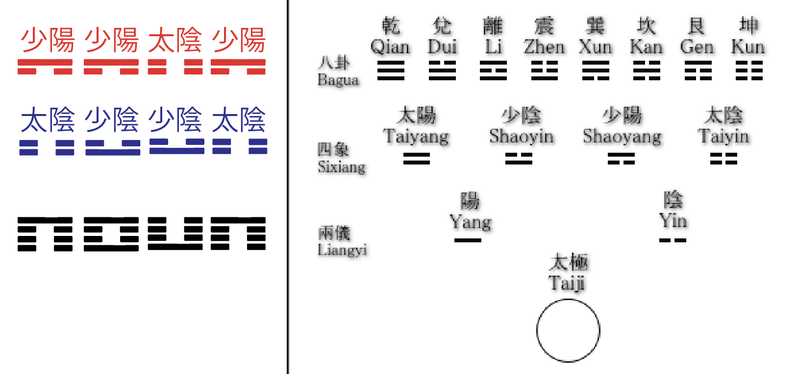

This is a list of (traditional) Chinese characters, arranged in two rows of eight. Translation of these characters reveals that they are the Sì Xiàng (四像), or Four Aspects of the Chinese Bagua, formed by the Dual Powers (Yin and Yang). Converting these Aspects into their corresponding bigrams gives an arrangement that kind of sort of maybe looks like our answer!
